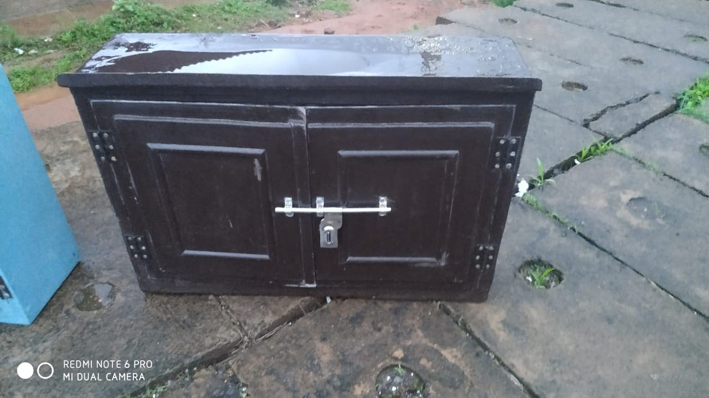
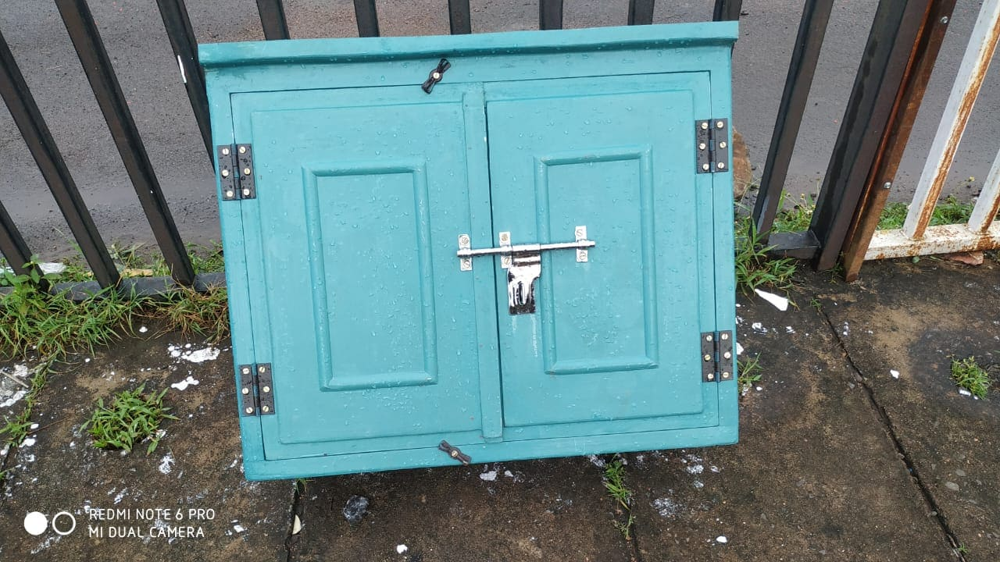
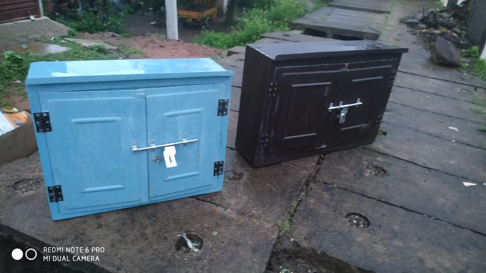
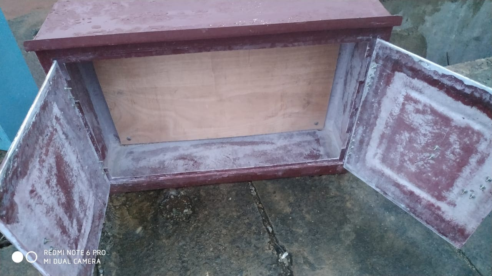
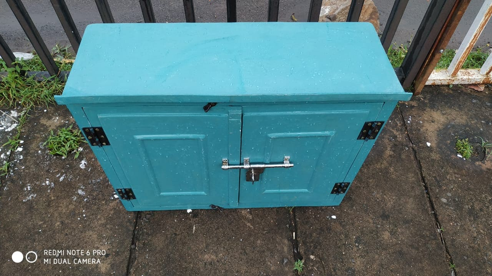

FRP Electrical Enclosures for Farmers
At Sifan Fibrotech, we manufacture specially designed FRP Electrical Enclosures for farmers and agricultural use. In rural and farm environments, electrical systems such as water pump controls, motor switches, and power connections are often exposed to rain, dust, humidity, and rough outdoor conditions. Our FRP enclosures are created to provide safe, durable, and long-lasting protection for these electrical components.
Unlike traditional metal boxes, FRP (Fiber Reinforced Plastic) enclosures do not conduct electricity and do not rust. This makes them a safer choice for farms where electrical panels are frequently installed near water pumps, borewells, irrigation systems, and open fields. These enclosures help protect both the electrical equipment and the people operating it.
Why FRP Electrical Boxes are Ideal for Farmers
Our FRP electrical enclosures are designed keeping the needs of farmers in mind. Some of the key advantages include:
- Electrical Safetyv: FRP is a non-conductive material, which means it helps reduce the risk of electric shock.
- Water and Weather Resistant: Protects electrical switches and panels from rain, humidity, and dust.
- Rust-Free Material: Unlike metal boxes, FRP does not rust even after long exposure to outdoor conditions.
- Strong and Durable: Designed to withstand rough farm environments and long-term use.
- Lightweight and Easy to Install; Farmers can easily install and maintain these boxes near pump systems or control panels.
- Low Maintenance: Requires minimal upkeep compared to traditional electrical enclosures.
Applications in Agricultural Areas
Our FRP electrical enclosures are commonly used in many agricultural and rural electrical setups, including:
- Water pump motor control panels
- Borewell electrical systems
- Irrigation pump switch boxes
- Farm power distribution panels
- Outdoor agricultural electrical installations
These enclosures help keep electrical connections safe, organized, and protected from environmental damage.
Safe and Reliable Solution for Farms
Farm environments often involve water, mud, and outdoor electrical equipment, which can increase the risk of electrical accidents. FRP electrical enclosures provide a safe and reliable solution by protecting electrical systems and reducing the chances of electric shock.
At Sifan Fibrotech, our goal is to provide farmers with durable, weather-resistant, and safe FRP electrical boxes that protect their equipment and ensure smooth operation of irrigation and farming systems. Our products are built to deliver long-lasting performance in tough agricultural conditions.





Contact Us
Get In Touch
We are available for consultations and project quotes. Visit our facility or contact us directly.
Sifan Fibrotech,
Kakhandaki Road, Babaleshwar.
Vijayapura City, Karnataka 586113, India
+91 9900645310
Sifanfibrotechpvtltd@gmail.com